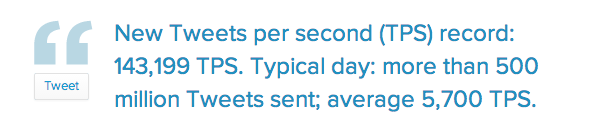

Intelie Live Platform
A dive in
What is it?
Live is a real time data analysis platform, that enables complex processing to be performed in very low time and memory footprint.
Architecture
How does it work
Intelie Pipes
Processing all the data
Intelie Pipes
Intelie Pipes is the engine that powers the Live Platform
Intelie Pipes
What is good about it?
- Filtering and aggregating over big data streams
- Provides a simple yet powerful language to perform aggregation
- Partition tolerant (enables distribution)
- O(n) in time and O(1) in space, always
Downloading a few gigabytes of data before you can start using Bitcoin is not a good first user experience. (...) added support for bloom filters to get just the transactions relevant to your wallet.
Big Title Slide
Code Example
Media Queries are sweet:
@media screen and (max-width: 640px) {
#sidebar { display: none; }
}
Once more, with JavaScript
function isSmall() {
return window.matchMedia("(min-device-width: ???)").matches;
}
function hasTouch() {
return Modernizr.touch;
}
function detectFormFactor() {
var device = DESKTOP;
if (hasTouch()) {
device = isSmall() ? PHONE : TABLET;
}
return device;
}
Some numbers
In one deployment
- 4 physical machines in cluster
- full-text search in a 15 TB dataset
- 20,000 messages/sec in average (~7 Mb/s)
- peaks of 80,000 messages/sec (~30 Mb/sec)
-
1.728 billion messages/day in average

Centered content
This content should be centered!
<Thank You!>
Important contact information goes here.